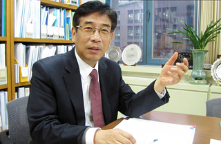

Keynote Speakers
Toh Chai Keong - "From Information Science to Data Science to Smart Nation"
Professor Toh Chai Keong is the Assistant Chief Executive - ACE (Engineering & Technology) and the Chief Engineering & Technology Officer (CETO) of Infocomm Development Authority of Singapore (IDA).
ACE Toh is a Singaporean with more than two decades of senior leadership experiences across multiple countries. Prior to returning to Singapore, he was the Senior Director and Chief Technology Advisor at ALICO Systems in California where he worked on R&D and product development. Earlier on he was with TRW Systems as Director of Corporate Research, a scientist at Hughes Research Labs, and a lead architect for various companies in the states.
Academically, ACE Toh was a Chair Professor in Computer Science at various universities including the University of London, Technical University of Valencia, National Tsinghua University Taiwan and a visiting faculty at Princeton, Yale, and Stanford.
ACE Toh has been recognised with 6 Society Fellowships (IEEE Fellow and AAAS Fellow), and 2 medals from IEEE and IET for pioneering technical contributions in wireless networks and internet protocols. His research citations exceed 13,000. He is also a Chartered Engineer and Chartered IT Professional.
ACE Toh graduated from the University of Manchester with a first class EE degree and a PhD in Computer Science from Cambridge University, UK.
ACE Toh is a Singaporean with more than two decades of senior leadership experiences across multiple countries. Prior to returning to Singapore, he was the Senior Director and Chief Technology Advisor at ALICO Systems in California where he worked on R&D and product development. Earlier on he was with TRW Systems as Director of Corporate Research, a scientist at Hughes Research Labs, and a lead architect for various companies in the states.
Academically, ACE Toh was a Chair Professor in Computer Science at various universities including the University of London, Technical University of Valencia, National Tsinghua University Taiwan and a visiting faculty at Princeton, Yale, and Stanford.
ACE Toh has been recognised with 6 Society Fellowships (IEEE Fellow and AAAS Fellow), and 2 medals from IEEE and IET for pioneering technical contributions in wireless networks and internet protocols. His research citations exceed 13,000. He is also a Chartered Engineer and Chartered IT Professional.
ACE Toh graduated from the University of Manchester with a first class EE degree and a PhD in Computer Science from Cambridge University, UK.
Jae Kyu Lee

Professor Jae Kyu Lee is the HHI Chair Professor in the College of Business, and currently serves as the head of Graduate School of Green Growth and the Director of EEWS (Energy, Environment, Water, and Sustainability Initiative) Research Center at Korea Advanced Institute of Science and Technology (KAIST). He has been a Professor of Management Information Systems and Electronic Commerce at KAIST since 1985, and served as Dean of the College of Business during 2006-7. He is currently the President and a Fellow of Association for Information Systems, the global organization of 4,000 IS researchers. He received his B.A. from Seoul National University, M.S. from KAIST, and Ph.D. from the Wharton School, University of Pennsylvania.
He was a visiting professor of the Wharton School at the University of Pennsylvania, University of Texas at Austin, Carnegie-Mellon University, and City University of Hong Kong. He was the founding editor-in-chief of Electronic Commerce Research and Applications and was the founding chair of the International Conference on Electronic Commerce. He was the Doctoral Consortium Chair of the International Conference on Information Systems, Conference Chair for the International Conference on Electronic Commerce, Pacific Asia Conference on Information Systems, as well as many other international conferences. He was president of academic societies such as Korea Society of Management Information Systems and Korea Society of Intelligent Information Systems.
He has authored four English books and seven Korean books with many editions, including the world best seller, Electronic Commerce: A Managerial Perspective (co-authored with Efraim Turban). He has published about 60 international journal papers (aside from 33 Korean journal papers) in leading international journals such as Decision Support Systems, Management Science, Communications of ACM, International Journal of Electronic Commerce, Expert System with Applications, European Journal of Information Systems, and many others. He has presented many keynote speeches and proceeding papers in major international conferences and workshops such as ICIS, PACIS, PRICAI, and ICEC.
Currently, he serves as associate editor of leading international journals such as Decision Support Systems, International Journal of Electronic Commerce, Organizational Computing and Electronic Commerce and Journal of Global Information Management. His research themes evolved to IT Management for Green Business. His primary research topics in IT Management is Axiomatic Theory in IS Research, Semantic web in electronic commerce, unified modeling with AI and optimization, and intelligent scheduling systems for various manufacturing industries. He has conducted 47 granted projects on eCommerce strategies for financial sectors, SCM and eProcurement Systems, case based project management systems, intelligent scheduling systems for ship building, power generation, and refinery. He currently cultivates research on the Smart Grid and Green Business Strategies.
He was a visiting professor of the Wharton School at the University of Pennsylvania, University of Texas at Austin, Carnegie-Mellon University, and City University of Hong Kong. He was the founding editor-in-chief of Electronic Commerce Research and Applications and was the founding chair of the International Conference on Electronic Commerce. He was the Doctoral Consortium Chair of the International Conference on Information Systems, Conference Chair for the International Conference on Electronic Commerce, Pacific Asia Conference on Information Systems, as well as many other international conferences. He was president of academic societies such as Korea Society of Management Information Systems and Korea Society of Intelligent Information Systems.
He has authored four English books and seven Korean books with many editions, including the world best seller, Electronic Commerce: A Managerial Perspective (co-authored with Efraim Turban). He has published about 60 international journal papers (aside from 33 Korean journal papers) in leading international journals such as Decision Support Systems, Management Science, Communications of ACM, International Journal of Electronic Commerce, Expert System with Applications, European Journal of Information Systems, and many others. He has presented many keynote speeches and proceeding papers in major international conferences and workshops such as ICIS, PACIS, PRICAI, and ICEC.
Currently, he serves as associate editor of leading international journals such as Decision Support Systems, International Journal of Electronic Commerce, Organizational Computing and Electronic Commerce and Journal of Global Information Management. His research themes evolved to IT Management for Green Business. His primary research topics in IT Management is Axiomatic Theory in IS Research, Semantic web in electronic commerce, unified modeling with AI and optimization, and intelligent scheduling systems for various manufacturing industries. He has conducted 47 granted projects on eCommerce strategies for financial sectors, SCM and eProcurement Systems, case based project management systems, intelligent scheduling systems for ship building, power generation, and refinery. He currently cultivates research on the Smart Grid and Green Business Strategies.